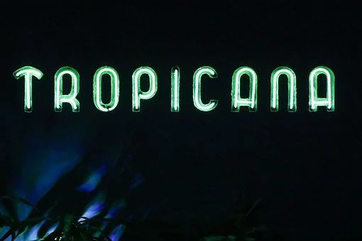
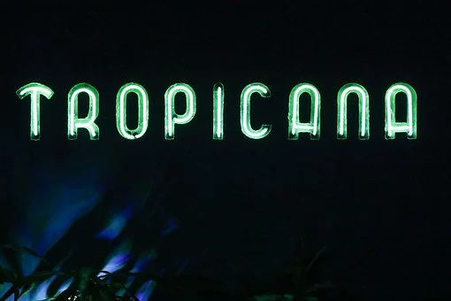
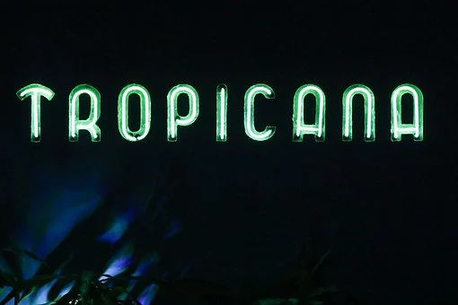

====this is a teaching website====
Ajay Ramkissoon
Home
Page1
Page2
Page3
Page4
When life gives you lemons, make lemonade.
How to make lemonade:
Juice and strain out the pulp of 8 lemons.
Add the lemon juice to 5 cups of water with ice and enjoy.

 
